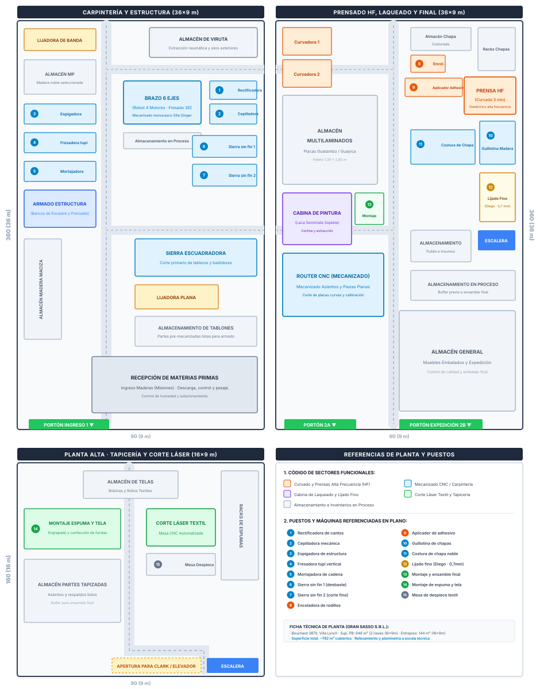

Descripción y relevancia del objeto: Silla de comedor contemporánea compuesta por un casco ergonómico envolvente de multilaminado de guatambú curvado, asiento tapizado en tela sobre base anatómica y estructura de patas en madera maciza lustrada. Este producto tracciona todos los centros productivos de la planta y sintetiza las capacidades técnicas de la firma.
Desglose de subconjuntos de fabricación: El proceso se descompone en 4 flujos concurrentes:
A) Respaldo: Encolado, prensado en alta frecuencia, fresado 3D robótico y lijado;
B) Asiento: Mecanizado y perforado de anclajes;
C) Estructura: Corte, cepillado, espigado y ensamble de bastidor macizo;
D) Tapizado y Acabado: Corte textil láser, engrapado de espuma y laca poliuretánica.
Gestión Industrial · Diagnóstico de ProcesoParte 3 · Cursograma Sinóptico
3. Mapeo del Estado Actual: Cursograma Sinóptico
Referencias de Actividades (Operaciones e Inspecciones)
Op. 1:Aplicar adhesivo a láminas y alternar veta/contraveta
Op. 2:Prensado en prensa hidráulica
Op. 3:Curvado en prensa de alta frecuencia
Insp. 1:Control de adherencia y geometría curvada
Op. 4:Mecanizado en brazo de 6 ejes
Op. 5:Lijado fino
Insp. 2:Control superficial
Op. 6:Mecanizado de asiento
Op. 7:Unión respaldo/asiento
Op. 8:Corte en sierra
Op. 9:Cepillado
Op. 10:Mecanizado en brazo de 6 ejes
Op. 11:Lijado
Op. 12:Armado y encolado
Insp. 3:Control
Op. 13:Lijado fino
Op. 14:Aplicado de laca/pintura
Op. 15:Corte láser de tela
Op. 16:Aplicación de espuma en bordes de asiento y respaldo
Op. 17:Colocación de funda en respaldo
Op. 18:Relleno de asiento en funda y colocación
Op. 19:Unión de estructura con asiento/respaldo
Gestión Industrial · Diagnóstico de ProcesoParte 3 · Cursograma Analítico
4. Cursograma Analítico del Flujo Principal (Silla Ginger)
Objeto de SeguimientoMaterial (Casco y Componentes Silla Ginger)
Punto Inicial / FinalAlmacén Misiones → Expedición de Fábrica
Método ObservadoActual relevado en planta (Bouchard 3870)
Informantes de CampoMauro (encargado) y Diego (operario)
N.º
Símbolo
Descripción de la Actividad
Dist.
Tiempo
Hallazgo de Campo (Evidencia)
Posible Mejora Operativa
1
Almacenamiento de multilaminados de Misiones
—
—
Láminas de 1,30×2,60 m acopiadas en rack general distante.
Definir sector de acopio próximo a preparación por lote.
2
Traslado hacia mesa de preparación
14 m
2,5 min
Cruce de pasillo central de tránsito peatonal de operarios.
Reorganizar sectores contiguos según secuencia de uso.
3
Preparación de capas (alternancia veta/contraveta)
—
4,0 min
Control empírico visual; riesgo de alabeo por inversión de veta.
Incorporar guía visual y plantilla física de orientación.
4
Aplicación de adhesivo de resina sintética
—
3,5 min
Aplicación manual con espátula; espesor de capa heterogéneo.
Estandarizar con encoladora de rodillos o instructivo SOP.
5
Armado de paquete de capas y centrado
—
2,0 min
Manejo manual de láminas resbalosas sin tope de escuadra.
Mesa con topes mecánicos perimetrales de posicionamiento.
6
Traslado de paquete hacia batería de prensas HF
8 m
1,5 min
Desplazamiento con carga inestable de láminas encoladas.
Acercar mesa de preparación a la bancada de prensa HF.
7
Prensado y curado en alta frecuencia (HF)
—
3,0 min
Ciclo tecnológico estricto de polimerización dieléctrica.
Sincronizar carga de segunda matriz gemela en tándem.
8
Enfriamiento y estabilización geométrica
—
1,5 min
Pieza reposa sobre mesa de prensa bloqueando nuevo ciclo.
Rack ventilado de enfriamiento post-prensado contiguo.
9
Traslado hacia celda robótica de mecanizado 3D
16 m
3,0 min
Recorrido largo cruzando zona de carpintería tradicional.
Reordenar flujo hacia una disposición celular en "U".
10
Mecanizado 3D en robot de 6 ejes (4 motores)
—
6,0 min
Alta precisión automatizada; tiempo muerto en fijación manual.
Optimizar clamp de sujeción neumático de cambio rápido.
11
Traslado hacia banco de perforado manual
12 m
2,0 min
Transporte intermedio evitable entre mecanizado y lijado.
Acercar banco o incorporar el agujereado al robot.
12
Perforado manual de anclajes (taladro banco)
—
5,5 min
Cuello de botella crítico: frena el flujo y depende de pulso.
Dispositivo matricial con bujes templados y topes rápidos.
13
Control dimensional de encastres y simetría
—
2,0 min
Verificación visual con regla sin calibre pasa/no-pasa.
Galgas Go/No-Go integradas en el puesto de trabajo.
14
Traslado a sector de lijado y terminación
15 m
2,5 min
Tránsito por sector con polvillo en suspensión sin protección.
Carro porta-piezas dedicado con separación protegida.
15
Lijado fino de superficies y cantos (Diego)
—
7,0 min
Riesgo crítico: desgastar la chapa noble de 0,7 mm; fatiga.
Lijas graduadas con base amortiguada y aspiración local.
16
Aplicación de laca poliuretánica semimate
—
8,0 min
Pintado a soplete en cabina; manipulación delicada en húmedo.
Carro giratorio ergonómico para reducir manipulación.
Referencias de Simbología (Norma ASME / IRAM / OIT)
Operación: Modifica la pieza o realiza ensamble.
Inspección: Control de calidad, medidas o ajuste.
Transporte: Desplazamiento físico entre puestos.
Espera / Demora: Detención temporal o enfriamiento.
Almacenamiento: Depósito bajo control de inventario.
Operaciones8
Inspecciones1
Transportes5
Esperas1
Almacenamientos1
Dist. Recorrida65 m
Tiempo Ciclo48,5 min
Gestión Industrial · Diagnóstico de ProcesoParte 3 (C) · Layout Oficial de Planta y Zonificación
5. Layout Oficial de Planta (Bouchard 3870, Villa Lynch)
Superficie ProductivaPlanta Baja (36×18 m) + Entrepiso (16×9 m) = ~792 m² cubiertos
Zonificación Operativa3 Sectores Productivos + Pasillos de Circulación y Almacenes
Identificación de PuestosEquipamiento Mayor en Plano + Puestos Numerados (1 a 15)

Gestión Industrial · Diagnóstico de ProcesoParte 4 · Matriz de Hallazgos y Desperdicios
6. Matriz de Diagnóstico Crítico de Hallazgos (Problemas y Desperdicios en Planta)
Problema Observado
Desperdicio (OIT/Lean)
Evidencia en Planta / Testimonio
Pregunta Crítica ECRS
Propuesta Inicial
Criticidad
1. Recorridos internos redundantes
Transporte y Layout
Recorrido de 65 m con retrocesos entre celda robótica, perforado manual y lijado. Cruces constantes en pasillos centrales de Nave 1 y Nave 2.
¿Por qué las operaciones consecutivas no están físicamente contiguas?
Reconfiguración espacial hacia célula en "U" continua en Nave 2.
Alta
2. Dependencia monopersonal en tareas clave
Factor Humano / Organización
Saber tácito concentrado; Diego en lijado fino ("fui aprendiendo acá, voy rotando") y monopolio en calibración de curvados.
¿Quién más puede realizar la tarea si el operario falta o se enferma?
Instructivos SOP visuales y matriz de polivalencia operativa.
Alta
3. Cuello de botella en perforado manual
Método y Tecnología
Mauro destaca que el taladrado manual frena el lote (5,5 min/pza), operado a pulso con plantilla de chapa desgastada.
¿Cómo eliminar la variabilidad manual sin una inversión desmedida?
Dispositivo matricial con bujes templados y fijación rápida.
Alta
4. Paradas por fallas en maquinaria crítica
Espera / Mantenimiento
Detenciones imprevistas (ej. Router CNC 5 ejes inmovilizado meses por placa electrónica). Mantenimiento puramente reactivo sin stock local.
¿Puede anticiparse el reemplazo de piezas antes de que fallen en línea?
Checklist preventivo autónomo diario y kit de repuestos críticos.
Media
5. Riesgo de rotura en lijado de chapa 0,7 mm
Defecto y Calidad
Diego señala la extrema sensibilidad para no traspasar la lámina noble de madera en aristas curvas. Genera scrap irreversible.
¿Cómo controlar el desbaste para estandarizar el espesor remanente?
Bases lijadoras amortiguadas y topes visuales de control por galga.
Media
6. Polvo de madera en suspensión y ergonomía
Seguridad y Ambiente
Incomodidad ocular y respiratoria en puesto de lijado pese a la aspiración colocada. Fatiga postural acumulada del operario.
¿Cómo captar las partículas directamente en la fuente antes de su dispersión?
Campanas de captación localizada y mesa aspirante ergonómica.
Media
Profundización de Hallazgos Críticos y Evidencias de Campo
Cuello de BotellaPerforado Manual de Estructura (Testimonio Mauro)
"Acá se nos arma el tapón de la silla; si el operario no puntea bien a pulso, después no coinciden los insertos con la base de caño y se frena el lote."
Diagnóstico Técnico: Operación manual de 5,5 min/unidad ejecutada sobre banco rudimentario con plantilla desgastada. Genera una acumulación recurrente de stock en proceso (WIP) y traslada desajustes dimensionales que repercuten en sobretiempos de ajuste durante el ensamblaje final.
Vulnerabilidad & CalidadLijado Fino y Saber Tácito Monopersonal (Testimonio Diego)
"Fui aprendiendo acá con los años, hay que tener mucho pulso porque la chapa tiene 0,7 mm; si te pasás un segundo, comés la guatambú y la pieza no sirve más."
Diagnóstico Técnico: Dependencia operativa extrema de una pericia intuitiva no codificada (inexistencia de SOP o instructivo visual), combinada con alta carga ergonómica postural y exposición a material particulado en suspensión por aspiración periférica deficiente.
Gestión Industrial · Propuesta OperativaParte 5 · Plan de Mejora ECRS & Síntesis
7. Propuesta de Mejora Operativa: Plan de Acción ECRS
Acción ECRS
Cambio Propuesto
Recurso Necesario
Impacto Esperado
Límite / Riesgo
Eliminar
Supresión de traslados redundantes: Reubicar la mesa de encolado en contigüidad directa con la batería de prensas HF, y eliminar la espera en molde mediante rack móvil ventilado.
Mano de obra interna; perfiles sobrantes de herrería vecina para el rack móvil.
Elimina 14 m de traslado inestable de láminas encoladas y reduce 25% el tiempo muerto entre prensadas.
Requiere despejar pasillo un fin de semana sin frenar entregas comerciales.
Combinar
Control integrado y polivalencia cruzada: Integrar galga de control pasa/no-pasa de curvatura en la descarga de la prensa HF y formalizar rotación periódica en puesto de lijado fino.
Galga de madera cortada en láser textil propio; matriz de polivalencia y rotación horaria.
Detección inmediata de delaminación antes de mecanizar; mitiga la fatiga física y el riesgo postural de Diego.
Exige compromiso de autocontrol en operarios de prensa y liderazgo de línea.
Reordenar
Célula de flujo en "U" continua: Redistribuir la secuencia física en Nave 2 (Almacén → Encolado → Prensa HF → Celda Robot → Perforado → Lijado → Cabina Pintura → Tapizado → Despacho).
Reubicación de bancos de trabajo y demarcación de piso con pintura epoxi de alto tránsito.
Reducción de distancia de 65 m a 34 m (-48%), supresión total de cruces en pasillo central y flujo visual transparente.
La cabina de pintura y robot 6 ejes mantienen ubicación fija por ductos de extracción.
Simplificar
Dispositivo matricial de perforado y SOP: Reemplazar el taladrado manual por dispositivo con bujes templados y topes mecánicos rápidos. Colocar instructivos visuales plastificados.
Mecanizado del dispositivo en el centro propio; impresión y plastificado de fichas SOP.
Tiempo de perforado cae de 5,5 a 1,8 min (-67%), eliminando el cuello de botella. Repetibilidad dimensional asegurada.
Requiere prueba inicial de calibración con los operarios de banco de armado.
Balance Comparativo de Productividad: Estado Actual vs. Propuesta
Distancia Total Recorrida
65 m34 m
-48% de traslados
Tiempo en Agujereado (Cuello Botella)
5,5 min1,8 min
-67% de tiempo
Tiempo de Ciclo Analizado
48,5 min36,0 min
-26% por unidad
Vulnerabilidad de Puestos
CríticaBaja
SOPs + Polivalencia
8. Síntesis y Aprendizajes de Gestión para el Diseño Industrial
Articulación entre método, técnica y productividad real. El diagnóstico del flujo de la Silla Ginger en Gran Sasso S.R.L. confirma que las ganancias sustanciales de productividad en una PyME manufacturera no dependen exclusivamente de incorporar bienes de capital costosos o automatizaciones de alta complejidad. La fábrica ya cuenta con tecnología de vanguardia internacional (curvado dieléctrico en alta frecuencia y celda robótica de 6 ejes con 4 motores); sin embargo, el rendimiento de esa capacidad instalada se veía severamente limitado por desperdicios de método y layout: 65 metros de traslados innecesarios con retrocesos ("ir y venir"), esperas de enfriamiento en prensa que bloqueaban el ritmo productivo, y un cuello de botella manual en el agujereado que demoraba 5,5 minutos por unidad.
El valor del diseño aplicado a la organización del trabajo. La aplicación sistemática del interrogatorio crítico y el método ECRS demuestra que las intervenciones más transformadoras provienen del diseño de dispositivos y la simplificación de interfaces operativas. El desarrollo de una matriz de perforado con topes mecánicos rápidos —fabricada en la propia planta aprovechando los retazos de hierro del taller vecino de General San Martín— recorta el tiempo de operación en un 67% (a 1,8 min) y suprime el error humano sin demandar financiamiento externo. Del mismo modo, la reconfiguración espacial hacia una célula en "U" reduce a la mitad el recorrido del material (-48%), ordenando visualmente la fábrica y erradicando los cruces de pasillo.
Sustentabilidad sociotécnica y condiciones laborales. Finalmente, desde la perspectiva del Diseño Industrial, la gestión de operaciones debe armonizar la eficiencia técnica con el cuidado del colectivo de trabajo. Sustituir la dependencia del saber tácito exclusivo mediante instructivos visuales de trabajo (SOP) y programas de rotación no solo neutraliza la fragilidad operativa ante ausencias, sino que dignifica la tarea de operarios como Diego, mitigando la sobrecarga postural en el lijado y captando el polvo de madera directamente en la fuente. Diseñar para la industria nacional implica proyectar tanto la forma del producto como la racionalidad, seguridad y fluidez de los procesos que lo hacen posible.